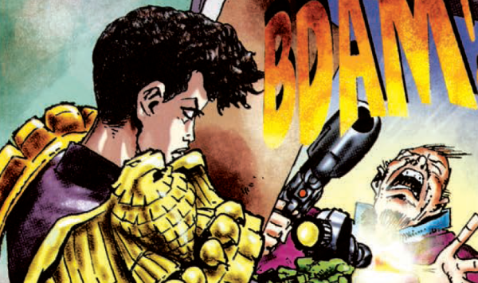

Castillo was assistant to Chief Judge McGruder during her second term, later working directly on cases with Dredd.
Art by Carlos Ezquerra
| Story Title | Parts | Pages | w indicates a wraparound coverCovers | Year(s) | Issues | Writer | Artist | Colourist | Letterer |
|---|---|---|---|---|---|---|---|---|---|
From Judge DreddConspiracy of Silence | 4 | 24 | 893: Mark Harrison 1 | 1994 | 891-894 | John Wagner | Mark Harrison | <-- | Tom Frame |
From Judge Dredd Prequel to Wilderlands.The Tenth Planet | 6 | 46 | M2.57: Peter Doherty M2.58: Carlos Ezquerra M2.62: Carlos Ezquerra3 | 1994 | M2.57-M2.62 | John Wagner | Peter Doherty (1) Carlos Ezquerra (2‑6)various | <-- | Tom Frame |
From Judge Dredd Megazine crossover.Wilderlands | 17 | 119 | 905: Dermot Power 907: Dermot Power 909: Jason Brashill M2.65: Jason Brashill 911: Dermot Power M2.67: Jason Brashill 914: Dermot Power 7 | 1994 | 904-915, M2.63-M2.67 | John Wagner | Carlos Ezquerra: 1‑2, 4‑5, 7‑8, 10‑11, 14, 16‑17 Trevor Hairsine: 3, 6, 9, 12, 15 Mick Austin: 13 various | <-- | Tom Frame |
From Judge DreddFarewell to the Chief | 1 | + 1 credit pages9 | 0 | 1994 | M2.68 | John Wagner | Cyril Julien | Steve White | Tom Frame |
From Judge DreddThe Pit | 14 | 86 | 970: Carlos Ezquerra 974: Cliff Robinson 978: Colin MacNeil 3 | 1995-1996 | 970-983 | John Wagner | Carlos Ezquerra: 1‑8 Colin MacNeil: 9‑11 Lee Sullivan: 12‑14 various | Alan Craddock: 9‑11 Mike Hadley: 12‑14 various | Tom Frame |
From Judge Dredd | The PitUnjudicial Liaisons | 3 | 19 | 987: Mark Harrison 1 | 1996 | 987-989 | John Wagner | Carlos Ezquerra | <-- | Tom Frame: 1‑2 Ellie De Ville: 3 various |
From Judge DreddCold Comfort | 1 | 6 | 0 | 2001 | 1225 | John Wagner | Anthony Williams | Chris Blythe | Tom Frame |
From Judge DreddLawcon | 4 | 48 | M3.76: Dylan Teague and Chris Blythe M3.79: Richard Elson and Chris Blythe 2 | 2001 | Reprints: M277 (supplement)M3.76-M3.79 | John Wagner | Richard Elson | <-- | Tom Frame |
| year | episodes | pages |
| 1987 | 0 | 0 |
| 1988 | 0 | 0 |
| 1989 | 0 | 0 |
| 1990 | 0 | 0 |
| 1991 | 0 | 0 |
| 1992 | 0 | 0 |
| 1993 | 0 | 0 |
| 1994 | 28 | 198 |
| 1995 | 3 | 19 |
| 1996 | 14 | 86 |
| 1997 | 0 | 0 |
| 1998 | 0 | 0 |
| 1999 | 0 | 0 |
| 2000 | 0 | 0 |
| 2001 | 5 | 54 |
| 2002 | 0 | 0 |
| 2003 | 0 | 0 |
| 2004 | 0 | 0 |
| 2005 | 0 | 0 |
| 2006 | 0 | 0 |
| 2007 | 0 | 0 |
| 2008 | 0 | 0 |